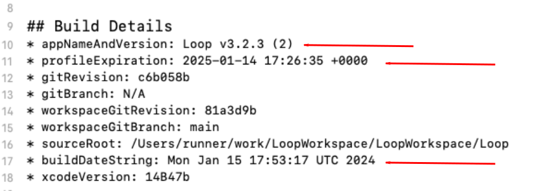

Update/Rebuild Loop FAQs
Overview¶
First, please take a minute to understand what the words mean.
-
Update the Loop App is the process of building a new version of code, updated from that already on your phone
-
Rebuild the Loop App is the process of building the same version of code, identical to that already on your phone
- Rebuilding the app extends the expiration date and enables your Loop app to keep working
In both cases, you build the code to install over an existing app on your phone or onto a new device.
Check Apple Developer Account
If you have an updated agreement, be sure to accept it before you update or rebuild.
- If you use the Browser build method:
- Follow the steps on Update/Rebuild with Browser
- Within an hour that new build should be available via TestFlight to install on your phone
- If you use the build with Mac method:
- Follow the steps on Update/Rebuild with Mac
- First make sure your Mac operating system and Xcode version are compatible with your iPhone version, and then
- Use the Build Select Script to download the latest released version of the code
- See note below if your internet speed or your Mac is very slow
- Follow the steps on Update/Rebuild with Mac
Slow Internet / Slow Mac? (click to open/close)
If you have a very slow download speed or if you do a lot of customizations, it may be worth your time to decide if you need a new download.
- Use Finder to check the date of your last download by looking in the Downloads/BuildLoop folder
- Check the date of the last release at GitHub
LoopKit/Loop releases - If the date in Finder is after the release date, follow Find my Downloaded Loop Code
- Double-click on the Loop.xcworkspace file in that folder
- This opens Xcode and you can just plug in your phone and build with your existing download
What if I'm changing phones?¶
There's a whole page devoted to just this topic: New Phone
When Should I Update?¶
- Best Practice
- Build if a serious bug-fix is reported
- Build, two to four times a year so that it becomes easier and you are ready in case of an emergency
- Each time you build, the app expiration date is bumped out a full year for build with Mac method and 90-days for Browser build
- Required
- When your expiration date forces you
- Do not wait until the app expires - it will stop working
- For Mac, you will see Loop is No Longer Available
- For Browser Build, the message is "Loop Beta has expired"
- Hint - start a few weeks early and take your time
- Optional
- A new version of the Loop app is released and you want to install it
- You want to try a different branch or fork of Loop
Steps to Update¶
Updating the Loop app is the same idea as what happens to your other apps on your iPhone when you update them from the App Store on the phone. A newer version of the same app appears on the phone, simply updating-in-place the same the Loop app you were using with an updated version.
- Do NOT delete your current app from your phone - even if it says "Loop is No Longer Available" or "Loop Beta has Expired"
- There are files stored on your phone that will be read in as soon as the new Loop app is installed
- If you deleted your app, then you have to enter all your settings again
- This is a good time to configure your phone to avoid accidental deletion
- Do an internet search like this: "iOS 15.4 prevent app deletion" where you use your current phone iOS version number and follow the instructions
Typical Apple Update Schedule:¶
- Each September, Apple releases a major iOS version which typically works with the current macOS but requires a new Xcode version
- Each September, Apple releases a major macOS version (but doesn't require you to update your Mac, yet)
- Each March, you must update to the current macOS (major version) to continue building applications
Where should I start when I want to update my Loop?¶
Check your Developer Account¶
Regardless of the build method, always check your Apple Developer Account status.
Apple updates its License Agreement for the Developer Program frequently. You need to log in to your developer account to manually check if there is a new agreement to accept. If you see a big red or orange banner across the top of your Developer Account announcing a new license agreement like shown below...please read and accept it before building Loop.

Updates with the Browser build method:¶
Go to Update/Rebuild with Browser and follow the instructions.
Updates with the build with Mac method:¶
ALWAYS start with the Update/Rebuild with Mac before any new build with Mac. That page is important because it will offer information on the updates you may need for your Mac and Xcode before building.
Do not simply build with your old downloaded folder from months ago. There is a high likelihood that your original code from awhile ago is outdated and might not build with the current phone iOS. Grab new code and you will get the compatible version that has all the latest and greatest features and bug fixes.
Will I have to delete my old Loop app?¶
No. Do not delete your old Loop app. In fact, that is a bad idea as you will lose your currently paired pod and/or settings if you do that. So, don't delete.
- Refer to What if I change the branch or fork?
Does update make a separate, second Loop app?¶
No. The Loop app is simply updated in-place, written right over the old version.
The only exception to this is if you update/build using a different developer signing team than your current Loop app.
- The app's identity on your phone is defined by the developer ID.
- If you change that unique ID, your phone interprets that as a unique app as well...giving you two Loop apps on the phone.
- Therefore, if changing developer accounts...you will get a new Loop app, and you would need a new Pod.
- You'll need to transfer your settings manually to the new app and delete your old app.
Will my settings be saved when I update?¶
Yes. That's why we don't delete the app. Your settings will be saved so long as you use the same developer ID.
Will my pod still work when I update?¶
Yes. So long as you use the same developer ID as you originally built the app with before.
How can I confirm what version was installed?¶
The Loop app version is given at the top of the Loop settings page.
There is more detailed information about how the Loop app was built at the top of the Issue Report as shown in the graphic in the next section.
When will my app expire?¶
The information in the graphic below shows the Build Details included at the very beginning of a Loop Report (Loop, Setting, Support, Issue Report).
Up through version 3.2.3, the Browser Build versions do not report the correct date in the Expiration Alert. The date reported is correct with Mac Build or later versions using the Broswer Build.

- A Browser Build can be identified when you see
runnerin the* sourceRootline in the graphic above- If you add 90 days to the
* buildDateString, that is approximately when the app expires - The best method is to look in the TestFlight app because that tells you exactly how many days until expiration
- If you add 90 days to the
- A Mac Build expiration date can be read directly from the
* profileExpirationline in the Build Details- The
* sourceRootline will be recognizable as where on your computer the download is located
- The
What if I change the branch or fork?¶
Does not matter. Changing the branch and even the fork is an update action. Nothing about the information above changes with the following exception.
The exception to the rule is if you build Loop 3 on your phone and want to return to Loop 2.2.x or any FreeAPS fork.
- In this case, the database storage is different between
Loop 3andLoop 2.2.x Loop 3can read the data stored byLoop 2.2.x, but the reverse is not true- If you are downgrading from
Loop 3toFreeAPS, you need to first record settings, delete the old app and then build the desired app, enter your settings and add your pump (new pod required for Omnipod)
How long does it take?¶
Assuming your macOS and Xcode updates are done, then plan on about 30 minutes for a Mac build. The Browser build steps are very fast, but then you need to wait about an hour for the build to complete and appear in TestFlight.